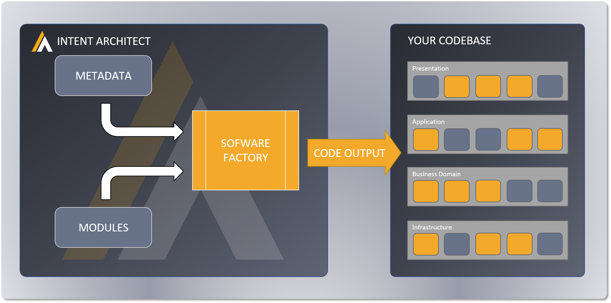
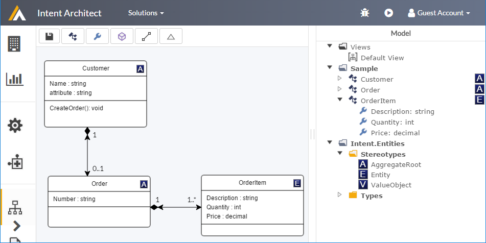
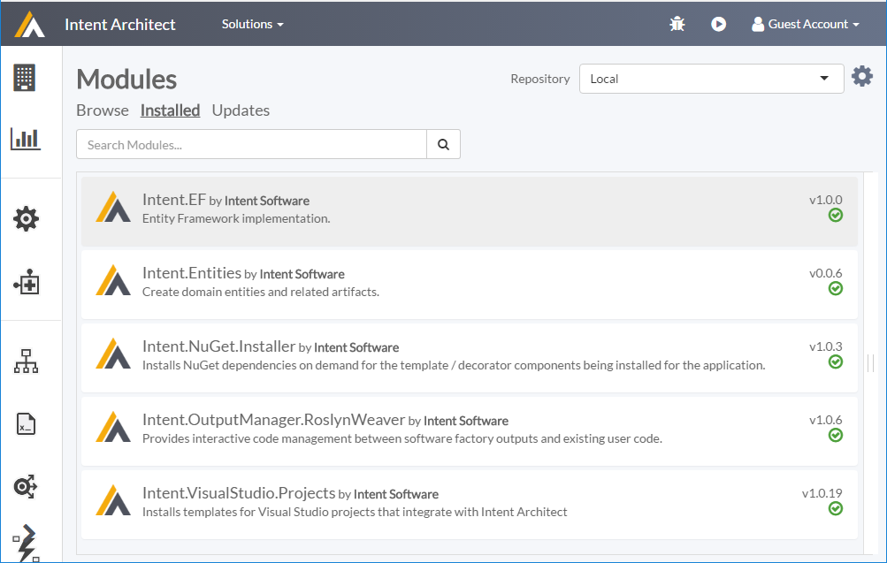
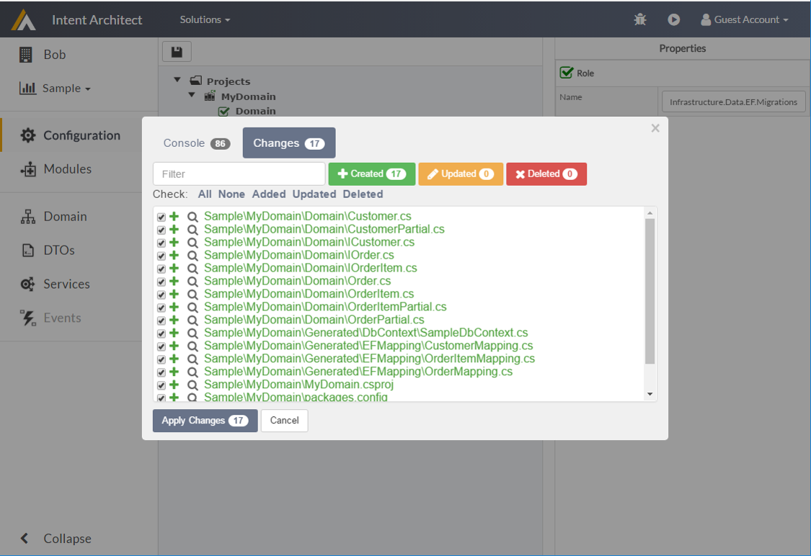

Welcome to Intent Architect
What is Intent Architect ?
Intent Architect is a coding automation tool for software developers. It's based on the principles of a software factory, and provides a platform for design and pattern reuse.
- Build Faster - Allow Intent Architect to manage the tedious and repetitive tasks that take up most of your time, freeing you up to focus on meaningful value-adding development.
- Quality Assured - Create your patterns, and then rest easy, knowing that they are applied consistently and correctly throughout your codebase.
- Agile Architecture - Future-proof your architecture! Effortlessly upgrade (or even swap out) your technologies and design patterns at the push of a button - mitigating technical risk has never been easier.
How does it work ?
All software systems, and this is particularly true of large enterprise systems, are composed of patterns. This code behind these patterns is often referred to as boilerplate code or plumbing. The more patternized a system is the more maintainable and robust it is. This is fairly well known and understood in the the software development industry. The real challenges comes in around things like:-
- How to make sure the pattern is implemented consistently, this often breaks down when people don't understand the original intent of the pattern, the technology or simply implement it lazily.
- Refactoring the pattern, once a pattern is implemented refactoring the pattern can be an expensive exercise as you may need to change every instance of pattern rather than the pattern itself.
- Changing technologies, often changes in technologies result it changes to the supporting patterns themselves, this problem is analogous to 'Refactoring a pattern'.
- Doing the easy thing as opposed to the right thing, some times we take short cuts in design because we know that the implementation would be too onerous.
Intent Architect is a continuous code generation tool which allows you to capture your application design and 'integrates' that design back to your solution code to help you build better applications. It directly addresses the issues described above by allowing you to maintain and refactor your design directly as opposed to hard coding it into your solutions. In this way you can maintain the design itself rather than the many fragmented and disjointed instances of your design present in your application.
Conceptually Intent Architect works in 3 steps:-
- Describe your application through Metadata
- Choose your patterns and their backing technologies through Modules
- Click the play button
 Overview of how Intent Architect work
In practice you would apply these steps organically and iteratively as you build out your solution, describing your application and refining it's design as you model your business domain, patternizing your application's architecture.
So what is involved in these 3 steps ?
Describe your application through Metadata
In this step you can describe your application or aspects of your application in a technology agnostic way. Some of the typical things you might want to describe about your application are:-
- Domain model
- Service Contracts
- Services
- Inbound and outbound events
- ANY other aspect of your application you feel is appropriate
Am I not just documenting my design ? Is principle yes, but unlike traditional documentation this is a living document which integrates into your actual source code. As you change your design (Metadata) your application source code changes. Through this process you capture the design intent of your application rather than hard coding it into your application source code, as it is traditionally done. This decoupling of the design intent from the actual source code makes refactoring or changing your designs easier. This is because you are literally changing the design rather then having to reverse engineer the design out of the source code and then refactor it.
Intent Architect has serval Domain Specific Languages (DSLs) which you can use to model the application concepts described above. An example of such a DSL would be our UML modelling DSL which would typically be used to model your application domain.
 UML Modelling DSL example
All the DSLs are fully extensible though a custom metadata extension system simply referred to as stereotypes. Stereotypes allow you to extend existing models and add your own custom data to the existing Metadata model. This would typically be data that is specific to your application or design. Should you wish to describe other aspects of your application, that Intent Architect does not have a DSL for, you can provide your own Metadata models. These Metadata models can be in whatever format you like, some examples may include JSON, XML or .Net source code. This can be done through creating your own MetaDataLoader plugin.
It is important to note you do not have to describe your entire application upfront, you can describe your application iteratively as you uncover the domain you are building for.
Choose your patterns and their backing technologies through Modules
When capturing Metadata you are really describing 'what' you want to build, in this step you are specifying 'how' you want it built. Specifying the 'how' is choosing which design patterns you want to use in you application. As an application architect this is no different to choosing which design patterns you will to using to in your application. To be clear these design patterns literally describe what the source code to be generated to solve a specific aspect of your application, things like:-
- Domain model persistence
- Service accessibility
- Application event propagation
- Connection Management
- Any patterns you as the application architect would like to see realized in your application
The way you 'choose your patterns' is by installing modules of your choosing.. Theses modules typically contain coded templates which will generate these design patterns into your solution, based on the Metadata you have previously described. You can reuse someone else's Module or build your own.
 Installed Modules example
Some additional points on modules:-
- Modules are technically more than just collections 'patterns' and can be used to extend or enhance the code generation process.
- Modules support configuration, allowing the developer to fine tune 'how' and 'what' they execute.
- The outputs of the Modules can be mapping into your solutions using the application configuration screen.
- These design patterns are often backed by a specific technology, an powerful side effect of this approach is that you have a clean loose coupling between your application and the underlying technologies through these Modules.
Click the play button
So this step ..., really is that easy. Clicking the play button in Intent Architect will execute the software factory. Intent Architect will take your Metadata, patterns, configuration and generate your application accordingly. What this means practically is that source code, as you per your design, will be generated. It is important to note at this point that Intent Architect is designed to work with continuous code generation in mind, i.e. whenever you change your design or patterns simply clicking play will update your application accordingly.
 Software Factory execution example
When running the Software Factory feedback about it's execution is provided in the console tab. The Changes tab provides comprehensive information about the code changes the Intent Architect wants to implement. These changes can be reviewed and then applied, orr discarded if required.
And that in a nutshell is how it works
- Describe your application
- Choose your patterns
- Let us build that for you
Why is this a better way to build software ?
There are many benefits to building software this way, here are some of the core design principles behind Intent Architect which result in a better software building experience.
Contract First
While it may not be obvious at first glance, in principle when you are using Intent Architect you are applying the principle of 'contract first', not only to your services, but to every aspect of your architecture you model. Contracting is fundamental to many modern software patterns e.g. SOA, Microservices, Dependency Injection. While you can flesh out your models in as much detail as you like at it's core you are describing the contracts for your application architecture.
loose coupling in your application design.
Raising the level of abstraction
Most significant improvements in the world of software development have occurred through this principle, some examples would be:-
- Assembly programming
- Imperative programming
- Object Orientated programming
- Domain Specific Languages (DSLs)
Intent Architect allows you to capture your designs using DSLs and / or Metadata. These designs can then be realized into code artifacts. This technique has been used many times in the history of computer science to improve the way developers and machines interface, allowing developers to express powerful concepts simply or more intuitively.
Large sweeping changes to be made at a design level, closer to the business concepts, rather than at a code level.
Truly patternized solutions
While many systems are patternized either explicitly or implicitly, this patternization is heavily dependant on developers implementing these patterns inline with whatever the original pattern designers vision was. This typically leads to variances or unintended deviations in the patterns, which often leads to bugs and architectural decay. From our experience in these scenarios more often than not the 'incorrect' pattern implementation is the one which propagates. This is mitigated when using Intent Architect as your patterns are fully implemented as per your design. It is important to note that Intent Architect does support pattern deviation for exceptions, but it needs to be done explicitly. The model of explicit deviation for exceptional scenarios is a far better and maintainable behaviour.
Developers can focus on the patterns rather than their scattered implementations. This principle also talks to architectural governance and explicit variation.
Agile architecture
What does agile architecture mean? Literally the ability to refactor / change the architecture of your application. This is very hard to do in traditional applications and when the requirement comes up you typically hear things like "we need to rewrite the system" or "the system was not designed to do that, it's not possible". Due to the fact that when using Intent Architect your application architecture is merely a realization of your design intent, which can be easily changed, the architecture is inherently refactor-able. The reason this is not possible in traditional development is that all the design intent has been lost and hard coded into the application.
This principle speaks to the ability to make architectural application refactors, which are typically impossible or onerous.
Encapsulated technology stacks
Technology stacks or frameworks along with their supporting patterns are introduced to your applications architecture through Modules. A side effect of this is that the technology is now loosely coupled into to your application through the module and Intent Architect. The technology stack in encapsulated in the module and can be managed through the module, removing the module removes the technology. The dependency between the various generated code artifacts and the module is maintained by Intent Architect. Traditionally the technology would be hard coded throughout your application with no easy way to remove it, short of manually tracking down every piece of code and removing it.
Technologies or Frameworks can be encapsulated through Modules, making them easier to change, upgrade or swap out.
Design visualization
Being able to visualize your application design, without having to trawl through code makes it simpler to :-
- Reason about the design
- Change the design
- Explain the design
- Understand the design
- Collaborate around the design
As they say, a picture says a 1000 words.
Better understanding and visibility of the applications design.
'Managed' Code
Managed code is a term we like to use for all the code Intent Architect is generating into your applications. What you find is that this code suddenly becomes code you don't have to worry about as it's being managed for you by Intent Architect. What this effectively means is that the code base you as a developer have to maintain is smaller. Smaller code bases are simpler to understand and maintain. From our experience it is possible to generate 30% - 70% of you code base depending on your architecture.
If you do need to change 'Managed' code you are changing the pattern rather than all the instances in your code base, making the code maintenance significantly simpler.
Less code to maintain, Less code to understand.
DRY (Don't repeat yourself)
Intent Architect allows you to achieve the DRY principle to 2 areas that are traditionally hard to do:-
- Boilerplate code
- Design and Implementation
Boilerplate code
As the boilerplate code is now generated from your design pattern, all this code is written and maintained in one place namely the pattern, regardless of how many instances of the pattern there are in the solution.
Design and Implementation
Documenting design is typically done side by side with implementation, i.e. we document the design, and separately we implement the design. The problem with this approach is that the two are completely detached and it's inevitable that the design and the implementation will go out of sync. Using Intent Architect the design flows directly into the implementation so there is no need to repeat the design in the implementation.
Design once, and have that design executed as intended.
No 'Magic' the code is there
There are several techniques developers use to try and minimize the coding of this boilerplate code, some of these techniques would include AOP, dynamic proxies, mix-ins or runtime weaving. While all these techniques are perfectly acceptable they often add in the element of 'magic' which makes it harder for developers who are unfamiliar with the implementation to understand what is going on or even follow the logic. While its important to note Intent Architect doesn't prohibit you from using these approaches it offers you a new technique, which is simply to generate the boilerplate code as you would have traditionally hand coded it. In this way the code is easy to read, debug and understand but you don't have to write / maintain all the boilerplate code.
Code thats easier to understand and debug, is easier to maintain.
No lock-in
Intent Architect is build to be a design time tool, just like your favourite IDE. There is no coupling between it and your application. This means you can stop using at any point with no impact on your solutions. This is different from most similar tools which would have some form of lock-in, examples of such lock-ins may include:-
- A runtime your code must execute in
- Proprietary framework dependencies
- Unmaintainable code generation, code generation which is unwieldy or poorly implemented such that its is obviously not what a developer would have coded.
Use the tool because it's adding value to you, not because you have to
By developers, for developers
The ideas and concepts present in Intent Architect have been developed, shaped and envisioned by developers trying to solve real world problems. The tool is in no way trying to diminish the development experience. This tool allows developers to better capture their design intent rather than hard coding it into their applications.
We are developers and we believe this tool takes our products to the next level
Code generation done right
Through the journey we have had a lot of experience with various code generation tools and techniques, with mixed results. In Intent Architect we have taken these learnings and tried to create a seamless code generation experience. Some of the factors we believe set us apart include:-
- Continuous generation, as opposed to once off code generation. At any point you can run the code generation and your application will update to reflect your design accordingly, even in existing code files.
- Managed outputs, most code generation tools work in a purely additive fashion i.e. only adding to or overwriting files in your code base, Intent Architect tracks the generated outputs and removes generated outputs which are no longer relevant.
- Code Weaving, we support advanced weaving systems which allow for manual code to be introduced into generated code files, and for that code to be maintained on subsequent generations of the code.
- Code as you would write it, this is really up to module implementors but in principle, and from our experience, there is no reason for the generated code to look any different to hand written code.
- IDE integration, the generated code is integrated into your IDE, no need to manually add or removed generated code files in your IDE. (We currently have an implementation for Visual Studio, but Intent Architect is extensible and there is no reason it can not be integrated into your IDE of choice)
Intent Architect wants to be a productive developer on your team, and not get in your way.